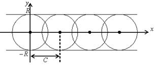

26.2.8. Особые решения ДУ первого порядка
Если ДУ первого порядка не разрешено относительно производной,
т.е. имеет вид , то через некоторые точки
плоскости может проходить не одна интегральная
кривая, т.е. для некоторых начальных значений может нарушиться единственность
решения.
Линия называется огибающей
однопараметрического семейства линий , если она в
каждой точке касается той или иной линии семейства, причем в различных точках
линии ее касаются различные линии данного
семейства. Для определения огибающей служат следующие два уравнения:
Пусть ДУ 
 имеет общий интеграл .
имеет общий интеграл .
имеет общий интеграл .Если это семейство интегральных кривых имеет огибающую, то
огибающая также является интегральной кривой ДУ.
Уравнения после исключения
параметра  , определяют функцию
, определяют функцию  .
.
, определяют функцию . Если эта функция удовлетворяет ДУ и
не принадлежит семейству , то она называется
особым решением ДУ. В каждой точке особого решения нарушается единственность
решения.
и
не принадлежит семейству , то она называется
особым решением ДУ. В каждой точке особого решения нарушается единственность
решения.Решите ДУ .
Решение:
, ,
.
Вычислим
.
Итак,
, .
Значит,
, ,
, откуда , .
Итак, – огибающие, которые
удовлетворяют ДУ, являются особыми решениями.
